The 4600 CommandCenter is the central information system used on all John Deere S700 Combines starting in 2018. The display allows the operator to view various important harvest and diagnostic information during harvesting and see it in a layout based on operator preferences. The 4600 CommandCenter has been developed in combination with the CommandARM™ console and the multifunction control lever to deliver outstanding ergonomics paired with best-in-class natural navigation.
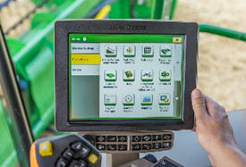
4600 CommandCenter
Feature benefits:
Display is easy to use due to its commonality across John Deere agriculture products
Large area for information provided by a 25.4-cm (10-in.) screen
Quick and easy navigation with touch functionality
10 percent less button presses compared to the previous design because of an app-based user interface with simpler navigation
Easy, logical, and intuitive operation with five run pages which can be configured by operators according to their preferences
Quick, convenient access to the most used apps on the display as custom configured on nine hot keys
Improved uptime due to display interface time savings including shortcut keys below the display that allow access to the most important combine functions
Natural navigation with easy and clear structure
To increase digital display area and have even more overview, an Extended Monitor is available
Functionality:
Five run pages can be configured by the operator according to their preferences for easy, logical, and intuitive operation. By scrolling to the left and right on the display, the operator can conveniently switch from run page to run page just like on a smartphone. In addition, the operator can switch the run pages from the multifunction control lever. This means the operator does not have to move their hand off of the controls but is still able to navigate through run pages.
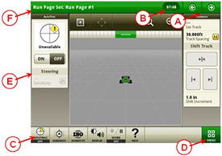
John Deere 4600 CommandCenter controls
A. Next and previous run page
B. Status center
C. Shortcut keys
D. Menu
E. Run page
F. Title bar
The 4600 CommandCenter features up to nine configurable buttons, allowing operators to personalize the access to their favorite apps so they spend less time browsing through the menu.
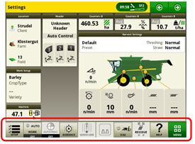
Nine configurable shortcut keys for quick access on display
Below the 4600 CommandCenter the operator will find 14 shortcut keys guiding directly through the most important areas during the harvesting day, saving time and clicks as well as keeping the main focus on the harvest.
The 14 shortcut keys below display grants quick and easy access:
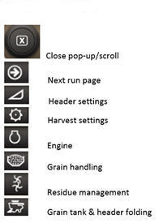
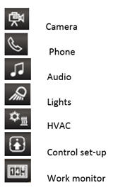
Operators that prefer even more digital surface than the 4600 CommandCenter are able to equip their S700 Combine with an Extended Monitor on the cornerpost. The Extended Monitor includes a bracket and adapter harness. The bracket allows the operator to flip up the Extended Monitor for improved visibility during road transport and maneuvering the combine.
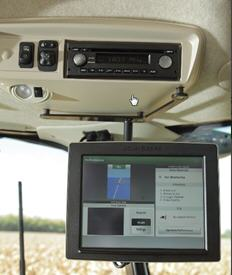
Extended Monitor
The 4600 CommandCenter in the armrest supports following features:
Compatible with 254-mm (10-in.) touchscreen display
CommandCenter AutoTrac™ assisted steering system capable
AutoTrac is in base for model year 2019 with code 1851
JDLink™ telematics system
Wireless Data Transfer (WDT)
Remote Display Access (RDA)
Interactive Combine Adjustment and Integrated Combine Adjustment 2 (ICA and ICA2)
HarvestSmart™ system
Active Terrain Adjustment™ system
ActiveYield™ system
Four camera inputs
Diagnostics and calibration
Harvesting information
Engine information
Header setup
Export screenshots and troubleshooting information
CommandCenter Premium 3.0 Activation capable
Layout manager
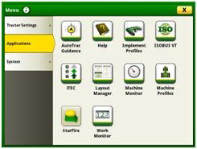
Layout manager selection page
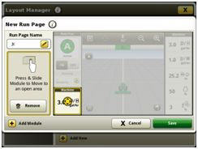
Layout manager module build
The 4600 CommandCenter features a modular-designed layout manager, so operators can easily create the page views that meet their needs. From the factory, machines are equipped with default run pages. An unlimited number of run pages can be added to the 4600 CommandCenter based on operator preference or operational needs. Toggling between run pages is as easy as using the arrow buttons on the top right portion of the title bar.
On-screen help and diagnostic text
There are a number of different ways to get meaningful on-screen help when navigating the 4600 CommandCenter. Operators can find the help icon on the shortcut bar on the bottom of every page. This icon gives detailed information on everything from combine operation to application information. Simply select the help icon and navigate to the information section that is needed.
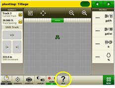
Help icon
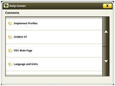
Help center main page
Additionally, application-based help is also available in all locations of the CommandCenter. Simply click on the {i} icon available on the title bar, and it will lead directly to more information on the application currently being used.
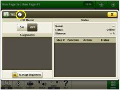
{i} icon
Work setup application
Work setup places the settings needed to properly setup AutoTrac, documentation, and Section Control in a single location.
Settings include:
Client, farm, and field
Crop type
Machine dimensions
Work setup can be quickly accessed from a shortcut key or the display menu, allowing operators and managers to quickly review display and machine settings to ensure a job is completed properly.
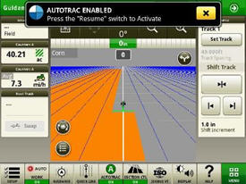
Work setup shortcut key (far left)
Option code
Description
1822 - base
4600 CommandCenter 254-mm (10-in.) color display – 4600 processor
Includes 4600 processor v2 and single 254-mm (10-in.) display. Processor equipped with CommandCenter controls and four video inputs included. CommandCenter Premium Activation capable. Documentation and CommandCenter AutoTrac are included in base software. For Machine Sync and A-B line sharing, an additional 2630 display is necessary. For more details on Machine Sync, please reference this dealer bulletin.
1828
4600 CommandCenter 254-mm (10-in.) color display with extended monitor – 4600 processor
Includes 4600 processor v2 and a 254-mm (10-in.) display on CommandARM with a second 254-mm (10-in.) display on cornerpost. Extended monitor includes bracket and adapter harness. Processor equipped with CommandCenter controls and four video inputs included. CommandCenter Premium Activation capable. Documentation and CommandCenter AutoTrac are included in base software.
1851 - base
CommandCenter AutoTrac Activation
Includes non-transferrable, machine-specific AutoTrac functionality on the integrated Gen 4 CommandCenter. CommandCenter AutoTrac is non-transferable and not available on the GreenStar™ 3 (GS3) 2630 Display.
System accuracy is dependent on the StarFire™ receiver signal accuracy.
1857
CommandCenter Premium 3.0 Activation
Includes non-transferrable, machine-specific AutoTrac, Data Sync, Section Overlap Control, AutoTrac RowSense™, and In-Field Data Sharing functionality on the Gen 4 CommandCenter.
To enable Wireless Data Transfer or Data Sync, a JDLink Connect subscription is required. Activation is machine specific and only available with a 4600 processor.
System accuracy is dependent on the StarFire receiver signal accuracy.
Only available for Australia, Canada, New Zealand, and the United States.